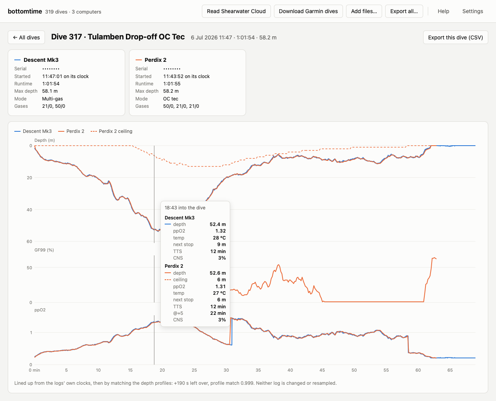
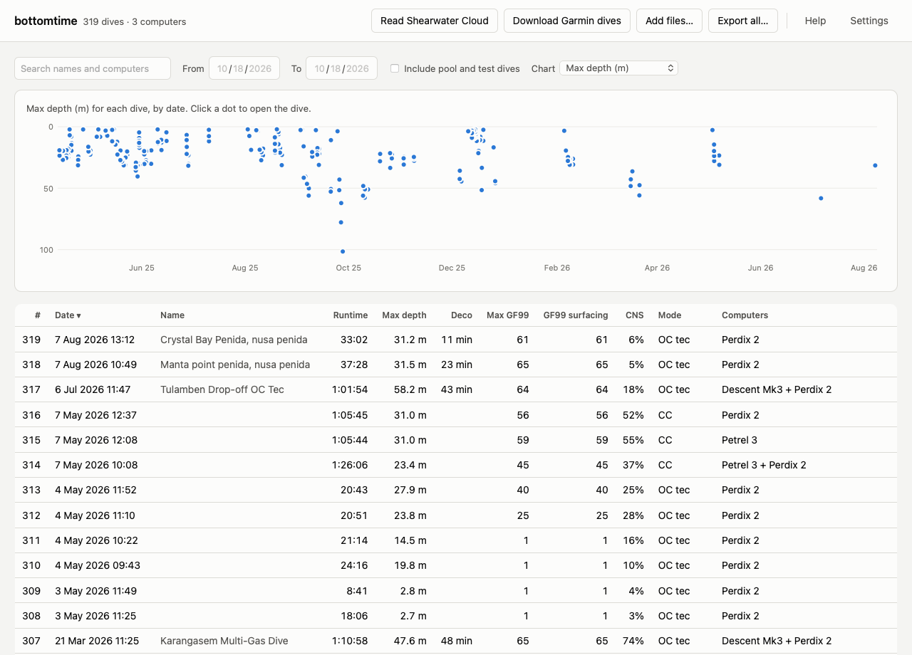

bottomtime is a free Mac app for divers who wear a Shearwater and a Garmin Descent. It reads the dives both computers recorded, lines up the two logs of each dive, and keeps every value they logged, including the GF99 and deco ceiling that Shearwater's exports leave out.
Free and open source. For Macs with Apple silicon, on macOS 11 or newer. How to install it.

No two dive computers' clocks agree. bottomtime takes the time zone from the Garmin, then slides one depth profile along the other until they match, so you can read what each computer said at the same moment. Neither log is changed or resampled. It lines up any pair of computers, two Shearwaters included.
Shearwater's XML and CSV exports leave out GF99, the deco ceiling, and @+5. bottomtime reads Shearwater's own log format, so those are all there, along with ppO2 sensors, battery voltage, and everything the Garmin recorded. Export all saves every dive as CSV files that open in Excel or Numbers without bottomtime.
Sort every dive by depth, deco time, GF99 at surfacing, or CNS, and chart any of them by date. Search by site, or narrow the list to the dates of one trip. Click any dive to open it.

If Shearwater Cloud's desktop app is on your Mac, bottomtime reads its dives directly, with nothing to export. For your Garmin, sign in to Garmin Connect once, and bottomtime downloads the original file of every dive your watch has synced.
After a dive trip, sync your computers as usual and open bottomtime. It picks up the new dives by itself. You can also add Garmin .fit files and Shearwater Cloud database exports by hand.
The first time you open it, a short tour shows you around. The manual covers the rest.
bottomtime keeps an untouched copy of every file it reads, Garmin's original files and each copy of Shearwater Cloud's database, and builds your dive list from those copies. If anything goes wrong, the list can be rebuilt from them.
It sends nothing about your dives anywhere. It contacts Garmin Connect only to download your dives, and GitHub only to check for a new version.
Decoded Shearwater values match Shearwater's XML export on all 142 dives I exported, and GF99 is within one point of Shearwater Cloud's end-of-dive GF99 on all 144. bottomtime has been tested with a Perdix 2, a Petrel 3 on a Choptima CCR, and a Descent Mk3. How it works explains the matching and the checks.
bottomtime is also a Python package and a command-line tool. Every dive lands in one SQLite file with a documented schema, ready for SQL or pandas. The Shearwater decoder is published on its own as pnf, with a byte-by-byte specification of the format.
pip install bottomtime bottomtime ingest shearwater dive_data.db bottomtime ingest garmin ~/dives/fit bottomtime match bottomtime show 291